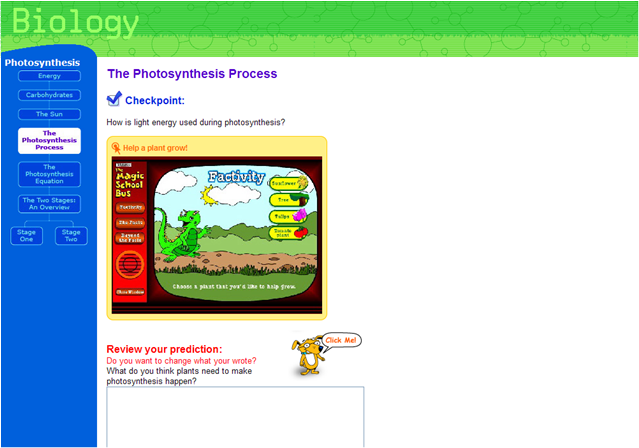

All resources associated with a particular key concept can be presented on a single page:
or can be parceleded across multiple pages to reduce the field on any individual page to reduce concept density and the amount of material available to the student at a given time:
Page 1
|
|
Page 2
|
Page 3 |